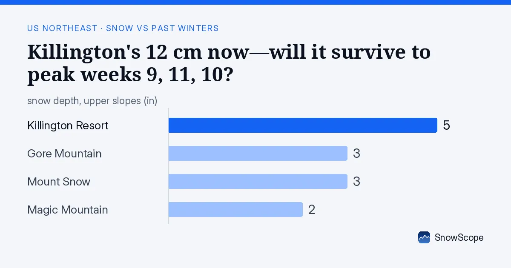

Killington's 12 cm now—will it survive to peak weeks 9, 11, 10?
Killington Resort hit 12 cm on its upper slopes today, outpacing 42 past winters for this date. The peak weeks—9, 11, and 10—don't typically arrive until late February and March, so this early snow will need to stay resilient.
See the live snow forecast for Killington Resort in the SnowScope appSnow depth, powder alerts and the 3D map, free.
Snow arrived fast
The speed of the event was the story. By 13 November, the upper slopes held 12 cm. The snow fell on 12 and 13 November: 8 cm on the 12th, then 4 cm on the 13th. In 72 hours, the summits went from bare to skiable. The Northeast followed the same pattern. On 11 November, the region had only 240 square kilometres of snow on 6 resorts. Two days later, on 13 November, 14,420 square kilometres of snow covered 28 resorts. That is 60 times more snow-covered area in two days.
This kind of rapid event is common in autumn. A single storm system moves through, dumps snow at high elevations, and then retreats. The question for November snow is always the same: will it survive until the real winter settles in?
| Resort | Snow depth | New snow, 72 h | Coming, next days | Top |
|---|---|---|---|---|
| Killington Resort | 5 in (12 cm) | 5 in (12 cm) | 1 in (2 cm) | 4,140 ft (1,262 m) |
| Gore Mountain | 3 in (8 cm) | 4 in (10 cm) | 1 in (2 cm) | 3,583 ft (1,092 m) |
| Mount Snow | 3 in (8 cm) | 5 in (12 cm) | 1 in (2 cm) | 3,586 ft (1,093 m) |
| Magic Mountain | 2 in (6 cm) | 4 in (9 cm) | 1 in (2 cm) | 2,851 ft (869 m) |

Where the depth sits
At Killington's summit, 1262 metres, SnowScope shows 11 cm. Step down to mid-mountain at 808 metres, and the depth is 8 cm. At the base, 354 metres, the ground is bare. This vertical profile is typical of early snow: concentrated at the cold peaks, absent at the warm base. For skiers, the depth that matters most is mid-mountain, because that is where most terrain lives. At 808 metres, 8 cm is deep for November—the usual is just 1 cm for 13 November. This puts today in the top 8 out of 46 past Novembers 13th.
Mount Snow shows the same profile: 8 cm on upper slopes, bare at the base. Gore Mountain also has 8 cm at the summit. Magic Mountain, the smallest of the group, is thinner at 6 cm. All tell the same story: good upper-mountain coverage, nothing below.
How rare is this
By the numbers, today is unusual for November in the Northeast. At Killington's mid-mountain height of 808 metres, today's 8 cm depth beats 42 of the past 46 Novembers 13th. At Mount Snow's mid-height of 842 metres, the 8 cm depth beats 43 of 46. Gore Mountain at 706 metres shows 4 cm, which beats 38 of 46 past years. Even Magic Mountain at 644 metres shows 2 cm, ahead of 36 of 46.
To put it plainly: the Northeast is in a rare regime for November. Early snow that is deeper than average does not happen often. This particular event is in the top 10 percent for depth on this date across the whole region.
Three days ahead
Light snow continues through mid-November. Killington could pick up 1 cm on 14 November and another 1 cm on 15 November—around 2 cm total by 16 November. The bigger challenge is the freezing level. On 15 November, the afternoon freezing level at Killington will reach 680 metres, well above mid-mountain terrain. That means melt on most slopes in the afternoon, even if snow keeps falling.
By 16 November, the forecast shows no new snow. The snow will consolidate rather than grow. For early-season snow in the Northeast, this is the routine: arrives fast, falls into a November freeze-thaw pattern, and either settles and hardens or melts away.
Peak weeks and survival
Killington's peak weeks are 9, 11, and 10—late February through mid-March. That is when cold air settles firmly and snow lasts. This November snow is arriving eight or nine weeks early and in a warmer regime. The real question is whether it will survive the freeze-thaw cycles of November and December, then pile up as the season accelerates through January and February.
For this snow to matter when weeks 9, 11, and 10 arrive, November and December need to stay colder than average. If they do, the foundation is set. If they warm, the November snow will likely consolidate and disappear under any rain-snow mix. For now, use our snow map to find the best snow near you, and check the official avalanche forecast before you go off-piste. Early-season snow is rare—make sure it is used safely.
Tips for skiers
- Head to Killington, Mount Snow, or Gore Mountain today; all three show 8 cm or more on upper slopes, well ahead of November average.
- Watch the freezing level: at Killington on 15 November, the afternoon level reaches 680 metres, so expect melt below that height.
- Ski in the morning when night freezing firms the surface; afternoon sun will soften it fast.
- Rocks and grass may show on mid-mountain slopes due to thin coverage where temperatures are warmer.
- Check the official avalanche forecast before you go off-piste; thin early-season snow on steep ground can be unstable.
About these numbers
Resort snow depths are the deepest snow on the resort's upper slopes on the date shown; they are estimates for an area, not a measurement at one point. Forecasts can change. Always read the official avalanche bulletin before going off-piste.
Official avalanche bulletins: Mount Washington Avalanche Center
Cite this report
For research, teaching or the press: the numbers and charts are free to reuse under CC BY 4.0 with this citation.
SnowScope (2026), Killington's 12 cm now—will it survive to peak weeks 9, 11, 10?, https://snowscope.app/blog/en/2026/11/us-northeast-snow-vs-past-winters-13-november-2026.html, accessed 2026-11-13
SnowScope (Atlas Labs). (2026, November 13). Killington's 12 cm now—will it survive to peak weeks 9, 11, 10?. SnowScope snow reports. https://snowscope.app/blog/en/2026/11/us-northeast-snow-vs-past-winters-13-november-2026.html
BibTeX
@misc{snowscope2026usnortheastsnowvspastwin,
author = {{SnowScope (Atlas Labs)}},
title = {Killington's 12 cm now—will it survive to peak weeks 9, 11, 10?},
year = {2026},
month = nov,
howpublished = {\url{https://snowscope.app/blog/en/2026/11/us-northeast-snow-vs-past-winters-13-november-2026.html}},
note = {Published 2026-11-13 18:24 UTC; accessed 2026-11-13}
}· CC BY 4.0 · Methods, data and tools →
Killington Resort: snow and temperature by height, this winter vs last (tools) →
Follow Killington Resort
Free: a message when fresh snow is coming, and the forecast every morning.
More snow reports

Stratton has 5 in (12 cm) on 2026-11-13 after 72 hours of snow. 28 Northeast resorts now have cover. Small amounts continue; best powder weeks arrive much later.

Northeast forecast made 10 November: 10 in (25 cm) of new snow arriving through 13 November will transform snow cover from 1 resort to 62.

Where will it snow in the US Northeast between 13 November and 26 November, and how much? We asked the two forecasts that reach two weeks, ECMWF …